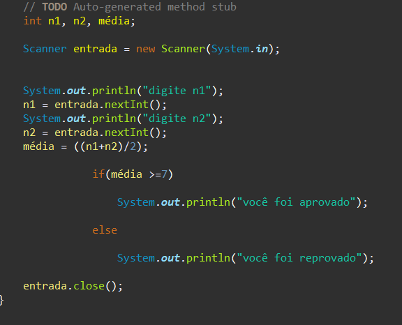
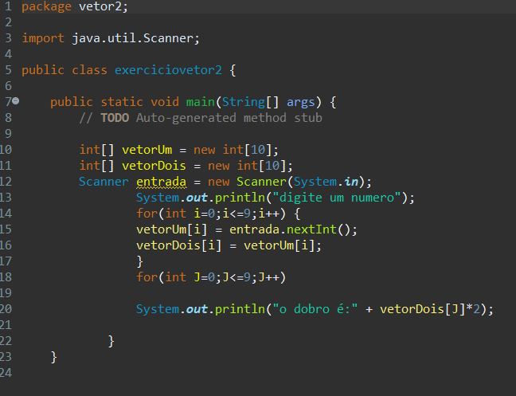
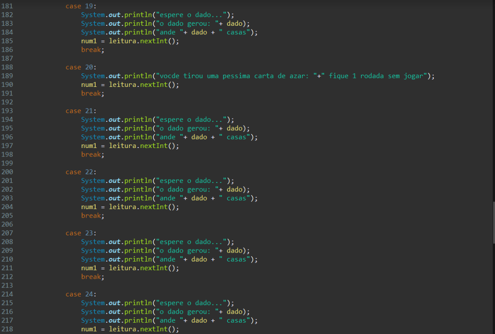
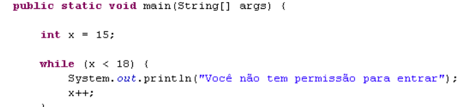
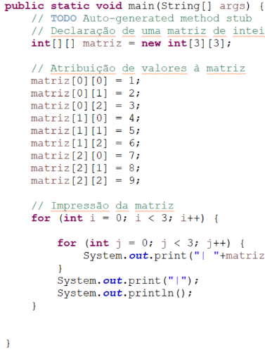

JAVA
Java é uma linguagem multiplataforma, orientada a objetos e centrada em rede que pode ser usada como uma plataforma em si. É uma linguagem de programação rápida, segura e confiável para codificar tudo, desde aplicações móveis e software empresarial até aplicações de big data e tecnologias do servidor.
IF/ELSE

A estrutura condicional if/else permite ao programa avaliar uma expressão como sendo verdadeira ou falsa e, de acordo com o resultado dessa verificação, executar uma ou outra rotina.
VETOR

O que são vetores e como são utilizados no Java? Vetores são estruturas de dados que armazenam usualmente uma quantidade fixa de dados de um certo tipo; por esta razão, também são conhecidos como estruturas homogêneas de dados.
TABULEIRO

Nesse semestre eu e meu grupo fizemos um jogo de tabuleiro no java.
WHILE

O loop do while do java é usado para repetir uma parte do programa algumas vezes. Se o número de iterações não é fixo e você precisa executar o loop pelo menos uma vez. É recomendado o uso do loop do while. O loop do while é executado pelo menos uma vez porque a condição é checada depois do corpo do loop.
MATRIZES

Uma matriz é um tipo de dado usado para representar uma certa quantidade de variáveis de valores homogêneos.